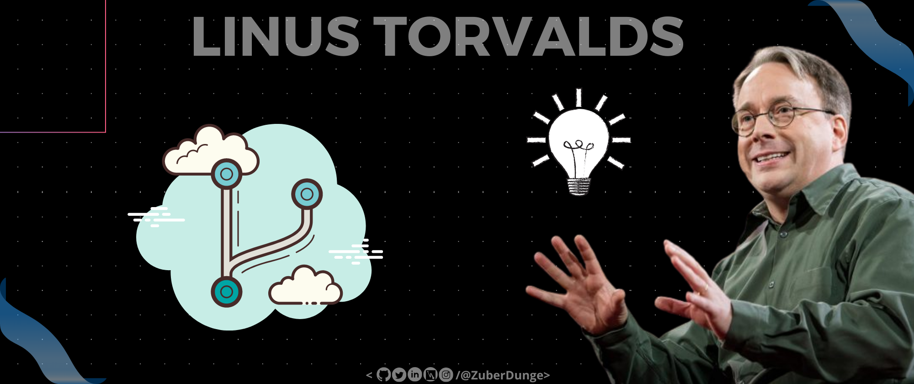

Here's what we'll go over in this article:
- What is Git?
- Why to use Git?
- Who Created Git?
- Git Installation
- Some Popular Git Management Services
- Conclusion
So, What is Git?

Well, In Technical Terms Git is an Source Distributed Version Control System. yeah I know it might go above your head but don't worry I'll explain it in simple terms.
In the lamest term, "Git is like a History sheet but an advanced one! Where you can check the history of changes done in the file/code. Git shows you what changes have been made and When it was made and by who."And it just doesn't show you the history but also allows you to Undo/Redo the changes. It's kinda Time Stone LMAO!
Why to use Git?

"Git has been designed with performance, security, and flexibility in mind."
Performance
- Git's performance is very strong and reliable as compared to other git alternatives.
- Being distributed enables significant performance benefits as well.
- One of Git's performance strengths is its advanced algorithms.
Flexibility
- Git tracks the changes while someone makes changes in a file with a commit message.
- Git helps to maintain the source code backup and can restore it.
- Git deploys the source code on the server with only one command.
Security
- Top priority of Git is the integrity of managed source code.
- Git repositories are secured with a cryptography hashing algorithm called SHA1.
- It protects the code and the change history against both accidental and malicious change and ensures that the history is fully traceable.
Also,
- Over 70% of developers use Git!
- Developers can work together from anywhere in the world.
- Developers can see the full history of the project.
- Developers can revert to earlier versions of a project.
Who Created Git?
Linus Torvalds
According to the official Git Website, As with many great things in life, Git began with a bit of creative destruction and fiery controversy.
The Linux kernel is an open-source software project of a fairly large scope. For most of the lifetime of the Linux kernel maintenance (1991–2002), changes to the software were passed around as patches and archived files. In 2002, the Linux kernel project began using a proprietary DVCS called BitKeeper.
In 2005, the relationship between the community that developed the Linux kernel and the commercial company that developed BitKeeper broke down, and the tool’s free-of-charge status was revoked. This prompted the Linux development community (and in particular Linus Torvalds, the creator of Linux) to develop their own tool based on some of the lessons they learned while using BitKeeper. Some of the goals of the new system were as follows:
- Speed
- Simple design
- Strong support for non-linear development (thousands of parallel branches)
- Fully distributed
- Able to handle large projects like the Linux kernel efficiently (speed and data size)
Since its birth in 2005, Git has evolved and matured to be easy to use and yet retain these initial qualities. It’s amazingly fast, it’s very efficient with large projects, and it has an incredible branching system for non-linear development.
Installation
How to install Git on any OS
Git can be installed on the most common operating systems like Windows, Mac, and Linux. In fact, Git comes installed by default on most Mac and Linux machines!
Git for Windows
-
Download the latest Git for Windows installer.
-
When you've successfully started the installer, you should see the Git Setup wizard screen. Follow the Next and Finish prompts to complete the installation. The default options are pretty sensible for most users.
-
Open a Command Prompt.
-
Run the following commands to configure your Git username and email using the following commands. These details will be associated with any commits that you create:
$ git config --global user.name "Your Name" $ git config --global user.email "Sample@gmail.com"
Git for Mac
Most versions of macOS already have Git installed, you just have to activate it through the terminal with the git version. However, if you don't have Git installed for whatever reason, you can install the latest version of Git using the below steps:
-
Download the latest Git for Mac installer.
-
Follow the prompts to install Git.
-
Open a Command Prompt.
-
Open a terminal and verify the installation was successful by typing git --version:
-
Configure your Git username and email using the following commands. These details will be associated with any commits that you create:
$ git --version
$ git config --global user.name "Your Name"
$ git config --global user.email "Sample@gmail.com"